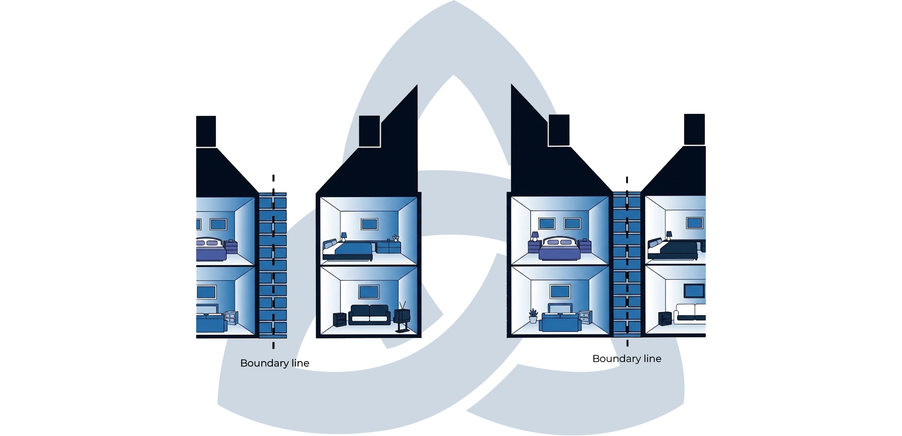

Party Wall Surveyor Manchester
Local Party Wall support for homeowners, adjoining owners, architects, developers and contractors before works start.
ABOUT PARITER
Professional, Reliable, Manchester-Based.
Pariter is a specialist Party Wall surveying practice serving Manchester and the wider North West. We provide expert guidance under the Party Wall etc. Act 1996, helping property owners avoid disputes, delays, and costly mistakes.
We work with homeowners, developers, architects, structural engineers and contractors.
Clear
We explain everything in plain English.
Efficient
We keep your project moving.
Careful
We prepare notices and awards carefully under the Party Wall etc. Act 1996 using a documented professional process.
Fair
We act impartially, as required by the Act.
THE LEGISLATION
Party Wall etc. Act 1996
Three sections of the Act govern most notifiable works. Below is what each one covers, when it applies, and what it means for your project.
Section 1 — Line of Junction Notice
This section applies when you plan to build a new wall on or up to the boundary line between your property and a neighbour's.
WHEN IT APPLIES
- Building a new extension wall on the boundary
- Constructing a garden wall on the boundary
- Proposing a wall that sits astride the boundary (requires neighbour consent)
WHAT THIS MEANS FOR YOU
You must notify your neighbour before starting any boundary-line construction. If they consent, work can proceed. If they dissent, surveyors must be appointed and a Party Wall Award agreed.
Section 2 — Works to a Party Wall
Section 2 covers alterations or works to an existing party wall or party structure.
WHEN IT APPLIES
- Cutting into a party wall for steel beams (loft conversions)
- Removing chimney breasts
- Raising, thickening, or underpinning a party wall
- Cutting projections off a party wall
- Inserting a damp-proof course
WHAT THIS MEANS FOR YOU
You must serve notice before carrying out any work that affects a shared wall. If your neighbour dissents, surveyors will need to agree a Party Wall Award before work begins.
Section 6 — Adjacent Excavation Notice
Section 6 applies when you plan to excavate within 3m or 6m of a neighbouring property to a deeper level than their foundations.
WHEN IT APPLIES
- Foundations for extensions
- Basement excavations
- Deep footings for retaining walls
- Drainage or manhole excavations deeper than neighbour's foundations
WHAT THIS MEANS FOR YOU
You must notify neighbours before any deep excavation near their property. If they dissent, surveyors must be appointed to agree protective measures in a Party Wall Award.
Please note
Party Wall compliance is separate from planning permission and Building Regulations approval. You may need all three for the same project.
CHOOSE YOUR ROUTE
Support Matched to Your Position.
Tell us which best describes you and we will route your enquiry to the right support. Notices, Schedules of Condition and Party Wall Awards are delivered within each route.
Homeowners & Building Owners
Planning an extension, loft conversion or excavation and need notice strategy and confidence before works start.
WE HANDLE:
- Identifying adjoining owners
- Preparing and serving valid notices (Sections 1, 2 and 6)
- Schedules of Condition before works begin
- Drafting Party Wall Awards (working hours, access, methods, protection, damage, compensation)
- Liaising with architects and engineers, and monitoring works
Adjoining Owners
Received a notice? We give a calm explanation of your rights and options, and protect your property.
WE PROVIDE:
- Full review of the proposed works and notice
- Schedule of Condition of your property
- Negotiation of Award terms on your behalf
- Ongoing monitoring during works
Architects & Developers
A professional route for programme certainty and early risk control before procurement or mobilisation.
WE SUPPORT:
- Early drawing review and adjoining-owner identification
- Notice strategy across Section 1, Section 2 and Section 6 risks
- Schedules of Condition and Party Wall Awards
- Pre-start advice to reduce programme delay and dispute risk
Contractors
A pre-start compliance screen before site risk crystallises on excavation, steels or boundary works.
WE CHECK:
- Whether the works trigger the Party Wall Act
- Whether the required notices have already been served
- What is needed before mobilisation to avoid avoidable delay
- Neighbour liaison and dispute resolution where issues arise
OUR PROCESS
Five Steps, Start to Close-Out.
Review
Send drawings, the notice, the property address and your start date — we review and confirm whether the Act applies.
Notice Strategy
We identify the adjoining owners and which notices are required.
Serve Notices
We prepare and serve valid notices and manage the response period.
Schedule & Award
We record the Schedule of Condition and agree the Party Wall Award.
Close-Out
We monitor works, handle any issues and confirm making-good or compensation.
FAQS
Frequently Asked Questions.
Legal Applicability
What is the Party Wall etc. Act 1996?
The Party Wall etc. Act 1996 is UK legislation that sets out rights and responsibilities when building work affects a shared wall, boundary, or nearby foundations. It applies in England and Wales and provides a legal process to notify neighbours, resolve disputes, and protect adjoining properties during construction.
When does the Party Wall Act apply to building works?
The Party Wall Act applies when works affect a shared wall or structure, involve building on or near a boundary, or include excavation close to neighbouring foundations. If your works fall under Sections 1, 2, or 6 of the Act, you must follow the Party Wall process before starting work.
What types of work require a Party Wall Notice?
Works requiring a Party Wall Notice include cutting into a party wall, raising or underpinning it, building on the boundary line, or excavating within 3 metres (or 6 metres for deep excavations) of a neighbouring structure's foundations.
Do I need a Party Wall Agreement for a rear extension?
A rear extension usually requires Party Wall compliance if it involves excavation near neighbouring foundations or works to a shared wall. If so, a Party Wall Notice must be served and an agreement or Award reached before construction begins.
Does the Party Wall Act apply to loft conversions?
Yes. The Party Wall Act commonly applies to loft conversions where structural works affect a shared wall, such as inserting steel beams or raising the wall. A Party Wall Notice is typically required before work starts.
Does the Party Wall Act apply to basement excavations?
Yes. Basement excavations almost always trigger the Party Wall Act due to the risk to neighbouring foundations. Notices must be served, and a Party Wall Award is usually required before excavation begins.
Does the Party Wall Act apply to flats and apartments?
Yes. The Act applies to flats where floors, ceilings, or walls are shared between different owners. Works affecting party structures require formal Party Wall procedures, even within the same building.
Notices & Timescales
When do I need to serve a Party Wall Notice?
A Party Wall Notice must be served before starting notifiable works. The notice period is usually one or two months, depending on the type of work, and must contain specific legal information.
How much notice do I need to give my neighbour under the Party Wall Act?
Most works require at least one month's notice, while works directly to a party wall or boundary typically require two months' notice before construction begins.
What happens if I don't serve a Party Wall Notice?
If you fail to serve notice, your neighbour may seek an injunction to stop the works. You may also be liable for delays, legal costs, and any damage caused, even if the work itself is otherwise lawful.
What happens if my neighbour ignores the Party Wall Notice?
If a neighbour does not respond within 14 days, they are deemed to have dissented. Surveyors must then be appointed to resolve the matter through a Party Wall Award.
How long does the Party Wall process usually take?
Straightforward cases may take 4–8 weeks. Disputed or complex projects, such as basements, may take several months depending on negotiations and technical issues.
Costs & Responsibility
Who pays for the Party Wall Surveyor?
In most cases, the Building Owner carrying out the works pays all reasonable Party Wall surveyor fees, including fees for the Adjoining Owner's surveyor.
How much does a Party Wall Award cost in the UK?
Costs vary depending on complexity, location and risk. Simple matters may cost a few thousand pounds, while complex basement or commercial projects can be significantly more.
Do I have to pay for my neighbour's surveyor?
Yes. Where works benefit the Building Owner, they are typically responsible for paying reasonable fees for both surveyors appointed under the Act.
Can Party Wall costs be disputed or capped?
Surveyor fees must be reasonable. If costs are excessive, they can be challenged within the Party Wall process or through appeal to the county court.
Neighbour Scenarios
What happens if my neighbour dissents to a Party Wall Notice?
If a neighbour dissents, surveyors are appointed to agree a Party Wall Award, which sets out how works are carried out and protects both parties' interests.
What happens if my neighbour refuses access?
The Act allows reasonable access for works authorised by a Party Wall Award. Access must be necessary, properly notified, and carried out with minimal disruption.
Can my neighbour stop my building works under the Party Wall Act?
A neighbour cannot stop lawful works outright, but they can delay them if proper notices are not served or if the Party Wall process is not followed correctly.
Can a neighbour get an injunction for Party Wall works?
Yes. If works start without complying with the Act, a neighbour may seek an injunction to stop works until proper procedures are followed.
Building Owner vs Adjoining Owner
What are my responsibilities as a Building Owner?
Building Owners must serve valid notices, pay reasonable surveyor costs, protect neighbouring property, and comply with the terms of the Party Wall Award.
What rights does an Adjoining Owner have under the Party Wall Act?
Adjoining Owners have the right to be notified, appoint a surveyor, have their property condition recorded, and be compensated for any damage caused by the works.
What should I do if I receive a Party Wall Notice?
You should review the notice carefully and either consent, dissent and appoint a surveyor, or agree to a single Agreed Surveyor within 14 days.
Can an Adjoining Owner appoint their own surveyor?
Yes. An Adjoining Owner may appoint a surveyor of their choice, with reasonable fees typically paid by the Building Owner.
Surveyors & Awards
What does a Party Wall Surveyor do?
A Party Wall Surveyor administers the Act, prepares or agrees the Party Wall Award, records property condition, and ensures works are carried out lawfully and safely.
What is a Party Wall Award?
A Party Wall Award is a legally binding document that sets out how works may proceed, including construction methods, access rights, and damage protections.
What is included in a Schedule of Condition?
A Schedule of Condition records the existing condition of neighbouring property before works begin, usually with photographs and notes, to protect both parties if damage is alleged later.
What is an Agreed Surveyor?
An Agreed Surveyor is a single impartial surveyor jointly appointed by both owners to administer the Party Wall process, often reducing cost and time.
Do Party Wall Surveyors have to be RICS qualified?
The Act does not require RICS qualification, but many surveyors are RICS accredited, which provides additional professional standards and regulation.
After the Works
What happens if damage occurs after Party Wall works?
Any damage caused by the works must be repaired or compensated in accordance with the Party Wall Award, usually at the Building Owner's expense.
Is compensation payable under the Party Wall Act?
Yes. Compensation may be payable for damage, loss, or inconvenience caused by notifiable works, as assessed by the appointed surveyors.
Can a Party Wall Award be appealed?
Yes. Appeals can be made to the county court within 14 days of the Award being served, but only on points of law or procedure.
How long does a Party Wall Award last?
A Party Wall Award usually remains valid for up to 12 months, during which the authorised works must commence.
Location & Property Type
Do I need a Party Wall Surveyor in Manchester for my extension?
Many Manchester properties, particularly terraces and Victorian housing, fall under the Party Wall Act. A surveyor is usually required where shared walls or nearby excavation are involved.
How does the Party Wall Act apply to Victorian terraced houses?
Victorian terraced houses commonly share walls and shallow foundations, meaning extensions and loft works frequently trigger Party Wall requirements.
Expert Guidance
What are the most common Party Wall mistakes homeowners make?
Common mistakes include failing to serve notice, using incorrect notice types, underestimating timescales, and starting work too early.
What delays building projects under the Party Wall Act?
Delays typically arise from late notices, neighbour dissent, incomplete drawings, or disputes over access and construction methods.
How can Party Wall disputes be avoided?
Early communication, clear drawings, accurate notices, and appointing experienced Party Wall surveyors significantly reduce the risk of disputes.
When should I instruct a Party Wall Surveyor?
A surveyor should be instructed as early as possible, ideally at design stage, to identify risks, confirm whether the Act applies, and avoid delays.
REQUEST A FREE CONSULTATION
Tell us about your project.
Send us the property address, your drawings or the notice you have received and your intended start date.
PHONE
0161 706 1147
OFFICE
Colony 5 Piccadilly Place
Manchester M1 3BR
RESPONSE TIME
We aim to respond within one business day.
